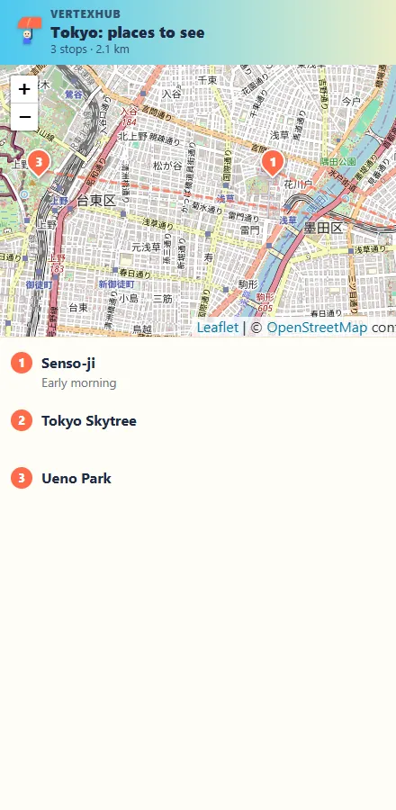
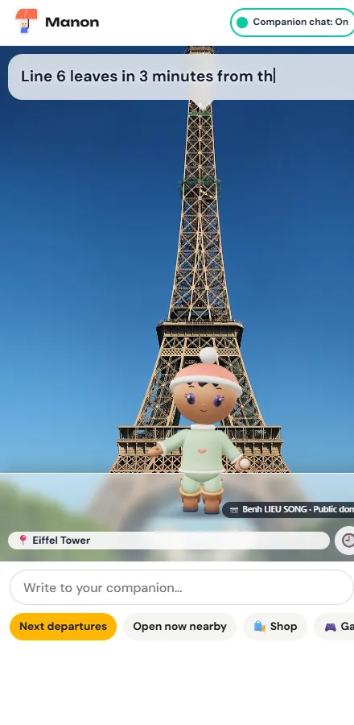
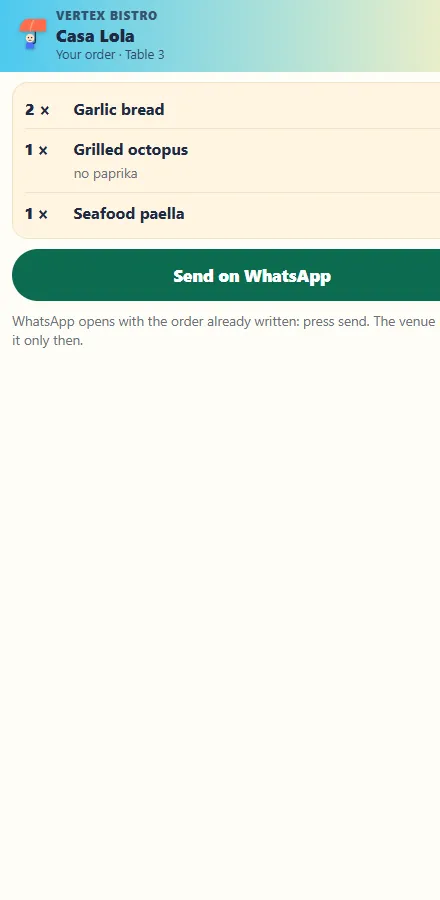
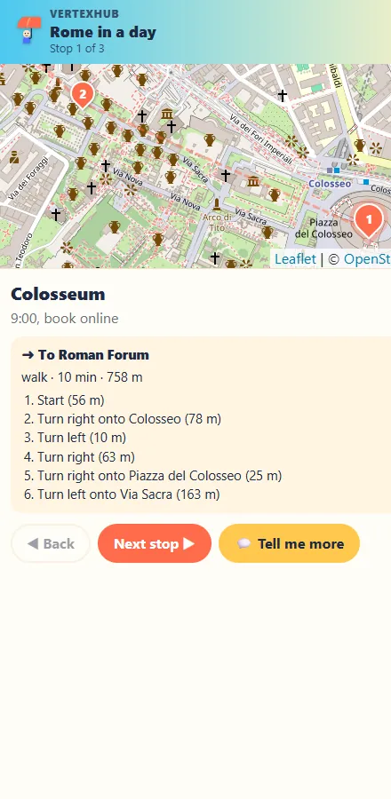
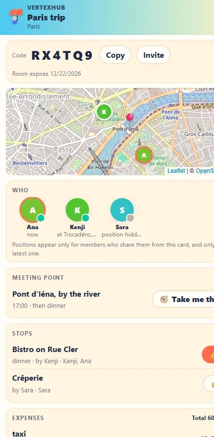
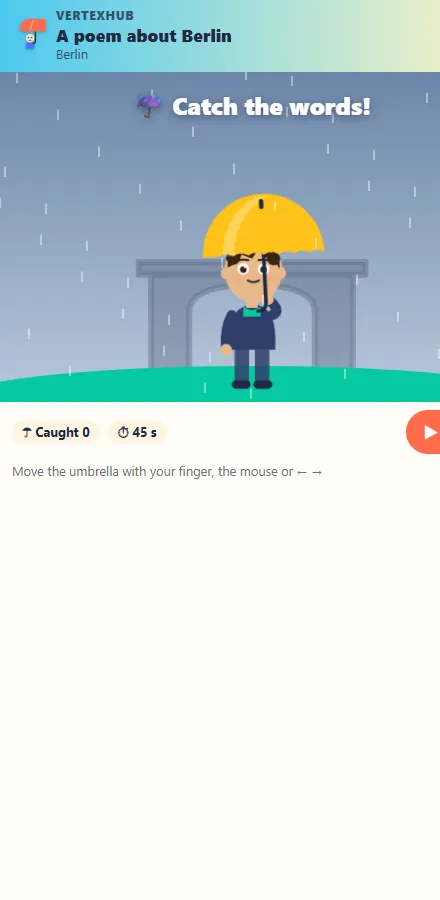
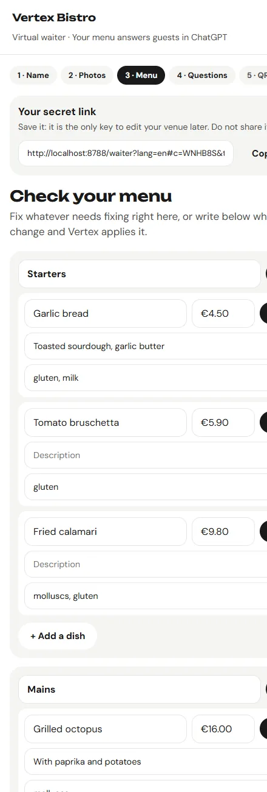
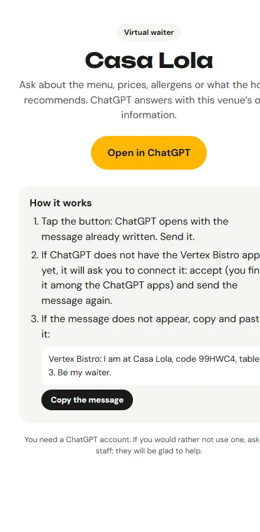
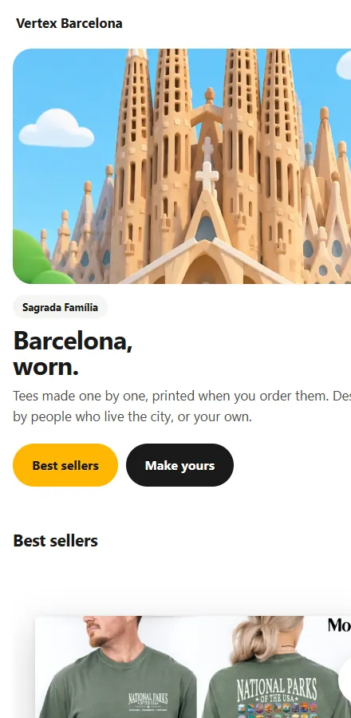

Apps for ChatGPT
Your city, live, inside ChatGPT.
Vertex makes three apps for ChatGPT. Two help travellers move around a city with live data. The third gives restaurants a virtual waiter. Every answer comes from real sources, with the source and the time of the data.



Demos
Three minutes each, with voice.
Each demo opens in its own page. Press “Play with voice”; Space pauses, F goes full screen.
VertexHub
Live transport, open now, day plans and group rooms, wherever you land.
Vertex Barcelona
The services of Barcelona in one chat: TMB, Bicing, the beaches and the city agenda.
Vertex Bistro
A free virtual waiter from a photo of the menu, and a search to find where to eat.
VertexHub · any city
One travel companion for every city.
Ask in your own language. VertexHub answers with official timetables, live data where operators publish it, and opening hours checked against local time.


Real cards of the app, with example data.
Vertex Barcelona
Barcelona, plugged into the chat.
The Barcelona edition brings the local services of the city into the conversation, with four companions who know the city: Mariona, Ona, Dan and Sergi-B.
Plus two games for dead moments: Catchme, and the umbrella word game that turns falling words into a poem about the place.

Real cards of the app, with example data.
Vertex Bistro
One app, two sides.
For restaurants, a virtual waiter in ChatGPT, free to start. For travellers, a search to find where to eat. Each side feeds the other.
The virtual waiter
- Photograph the menu, up to eight photos.
- Check the transcription; fix it in plain words.
- Answer at most ten questions about the house.
- Print one QR code per table.
- Guests ask in their own language and order on WhatsApp.
Find where to eat being designed
- Ask where to eat, in any language.
- See what is open now, near you.
- For venues with the waiter: the real menu, prices and allergens.
- Walk in, scan the QR, order.


Real pages of the waiter, with an example venue.
The shop
Wear the trip.
Nothing is sold inside the apps. The Shop button opens our own website: T-shirts printed one by one when you order, with designs from the city or your own, made in the tee editor.

Measurements
Measured, not claimed.
Numbers taken on 24 November 2026 from the code and from the live VertexHub server on Cloudflare Workers. Nothing here is an estimate.
Benchmark: response time of the live tools
| Tool and request | First call | Next calls | Next calls, scale to 1 s |
|---|---|---|---|
| get_departures · Plaça de Catalunya | 0.31 s | 0.26 – 0.36 s | |
| get_weather · Rome | 1.16 s | 0.27 – 0.58 s | |
| mobility_get_coverage · Helsinki | 0.67 s | 0.52 – 0.54 s | |
| find_nearby · pharmacy open now | 16.4 s | 0.31 – 0.33 s |
Three calls per tool from Barcelona over a home connection. The first call fetches open data from the source; the next ones are served from the server cache. Place searches depend on public OpenStreetMap servers, which can be slow at busy times.
Open data coverage (UrbanFlow catalogue, 15 November 2026)
| Feed type | Feeds | Example cities |
|---|---|---|
| Timetables (GTFS) | 2,808 | Tirana, and almost every city with public transport |
| Live updates (GTFS-Realtime) | 1,773 | Barcelona, Helsinki, Boston, Cagliari |
| Shared bikes and scooters (GBFS) | 1,279 | Bicing, Blue Bikes, scooter and moped operators |
Privacy and GDPR
Only what the answer needs.
The apps follow the EU General Data Protection Regulation and Spanish data protection law. This page is a summary; the full privacy policy, legal notice and cookie policy are linked below.
How long data is kept
| Data | Why | Deleted after |
|---|---|---|
| Precise position code | To pass your position from your phone to the card | 1 hour at most |
| Group room (names, votes, expenses, shared positions) | To run the room for your trip | 30 days |
| Virtual waiter orders (dishes, quantities, table, time; no name or phone) | Statistics for the venue | 30 days, then only totals per dish and day |
| Email for a waiting list or a gift | To write to you about it | 12 months |
Deletion runs automatically every day. Providers: Cloudflare (hosting), Supabase (database), and the AI providers named in the privacy policy; FormSubmit delivers the messages of the contact form.